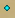
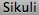

biggest = Subregion(195,139,309,234) bigger = Subregion(266,141,164,140) big = Subregion(287,159,125,103) small = Subregion(284,176,125,80) smaller = Subregion(317,191,64,54) smallest = Subregion(318,193,59,45) blueDot = Pattern().similar(0.63).firstN(50) if find(): doubleClick() untilNotExist() if smallest.inside().find(blueDot): doubleClick(smallest.inside().find(blueDot)) print("smallest") elif smaller.inside().find(blueDot): doubleClick(smaller.inside().find(blueDot)) print("smaller") elif small.inside().find(blueDot): doubleClick(small.inside().find(blueDot)) print("small") elif big.inside().find(blueDot): doubleClick(big.inside().find(blueDot)) print("big") elif bigger.inside().find(blueDot): doubleClick(bigger.inside().find(blueDot)) print("bigger") elif biggest.inside().find(blueDot): doubleClick(biggest.inside().find(blueDot)) print("biggest")